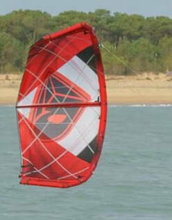
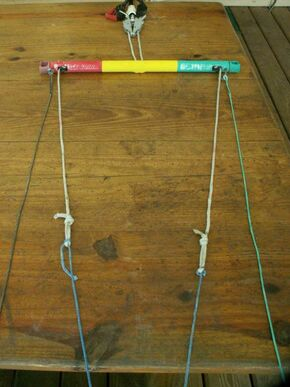
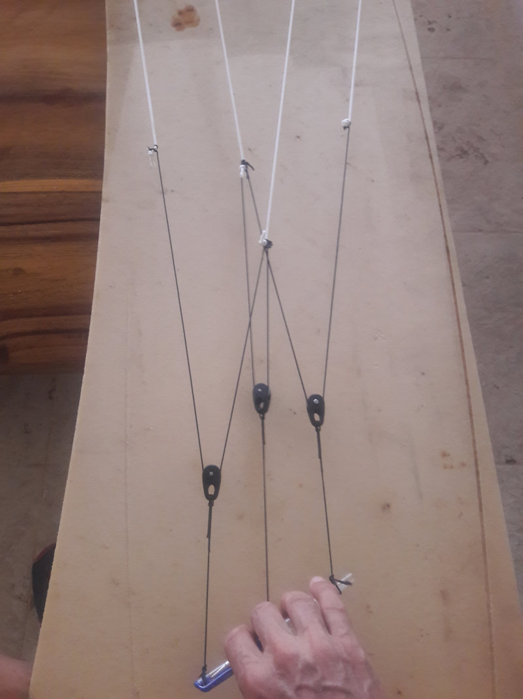
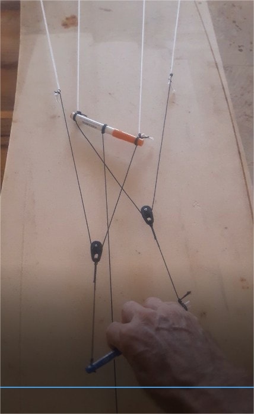

The idea is to get the kite turning not only thanks to the back lines but also to the front lines. This way the kite turns faster and can't stall.
That's very interesting in light winds and during kiteloops. It really changes the kite behaviour.
That's very interesting in light winds and during kiteloops. It really changes the kite behaviour.
On this picture found on internet, you can clearly see that to get the kite up in light wind, the pilot has to over-use the left back line (brake).
The left wingtip is so twisted that it may stall, while the right one still has a positive angle of attack, i.e. it acts against the left one.
With the device I propose, both wingtips twist same way, so the turn is much smoother.

The idea has been tested first time on a U bar I developped with my brother for Manu Bertin in 1996 or 1997.
No center line, the 4 lines are attached to the bar and the pilot orients the bar to get the wished power and turn speed.
On the pic, you can see the different drill holes where we attached the crossed front lines.
It worked but was quite "physical".
No center line, the 4 lines are attached to the bar and the pilot orients the bar to get the wished power and turn speed.
On the pic, you can see the different drill holes where we attached the crossed front lines.
It worked but was quite "physical".

In the middle of the 2000s we tested some configurations with bow kite prototypes, trying to solve the above mentionned problems. One of them was working relatively well. The only problem is that it requires an additional bar about one meter above the control bar.
in 2008 I made a prototype bar with 4 pulleys inside. There was an hawaiian guy developing the same bar at the same time or before, but for another purpose : both front lines were moving to the left and right together. He had a patent for it.
The problem I found with my version was that the front lines' tension was creating too much friction in the circuit so that there was not enough feedback coming from the kite, and powering/depowering was not smooth anymore.
UPDATE 04/28/2019 : I have been contacted by Alexey Zhmylev who has built several prototypes of pulley bar in the past months with crossed front lines. He just completed the tests and says that the kite behaviour improves a lot and there are no friction issues when using good ball bearings.
SO IT IS AN ALTERNATVE to the double bar.
More info, videos and pics at facebook Alexey
The problem I found with my version was that the front lines' tension was creating too much friction in the circuit so that there was not enough feedback coming from the kite, and powering/depowering was not smooth anymore.
UPDATE 04/28/2019 : I have been contacted by Alexey Zhmylev who has built several prototypes of pulley bar in the past months with crossed front lines. He just completed the tests and says that the kite behaviour improves a lot and there are no friction issues when using good ball bearings.
SO IT IS AN ALTERNATVE to the double bar.
More info, videos and pics at facebook Alexey


In 2011, I developped with Eric Beaudonnat a more conplicated version not intended for kiteboarding.
Here are simplified versions imagined end of march 2019.
This one doesn't allow a "return to neutral" of the front lines. Doesn't work !
Placing bungees on the front lines won't solve it.

This version allows a "return to neutral" of the front lines thanks to the triangulation created by the upper bar.

SO THE WINNER IS...
an improved version of the A4TA with an efficient trim.
This device is easy to test and manufacture. A brand which would bring to the market a control device that gives unique qualities to any kite would certainly get rewarded for it.

Here is another working version with its pros and cons

This invention has not been protected (except from predators by being published) and is offered in an open-source spirit. Brands are welcome to use it.
Published in April 2019